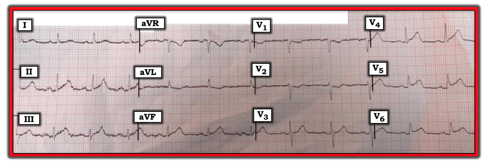
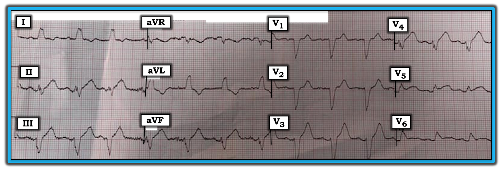
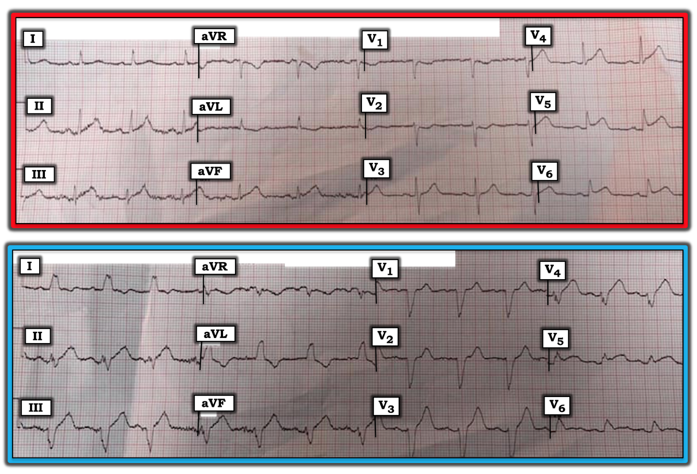

ECG Blog #162 — Có thể chẩn đoán MI khi có LBBB không?
Điện tâm đồ trong Hình-1 được ghi ở một phụ nữ lớn tuổi đã gọi EMS vì đau ngực mới khởi phát.
- Bạn sẽ đọc bản ghi này như thế nào?
- Mạch vành nào nhiều khả năng bị tổn thương cấp?


=========================
DIỄN GIẢI: Có nhiễu đường nền, nhất là ở các chuyển đạo thành dưới — vì điện tâm đồ này được ghi trên xe cứu thương trên đường tới bệnh viện. Dù vậy — bản ghi vẫn đọc được. Nhịp xoang ~70/phút. Mọi khoảng (PR, QRS, QTc) và trục đều bình thường. Không có lớn buồng tim. Về Thay đổi Q-R-S-T:
- Không có sóng Q .
- Tăng tiến sóng R bình thường — với vùng chuyển tiếp (nơi sóng R cao hơn độ sâu của sóng S) nằm giữa chuyển đạo V3 và V4, là bình thường.
- Có ST chênh lên 1-2 mm tại điểm J ở chuyển đạo V4 đến V6. Dù bị nhiễu làm khó nhìn — sóng T ở mỗi chuyển đạo thành dưới (II, III, aVF) có vẻ lớn hơn, đáy rộng hơn và nhọn hơn mong đợi — phù hợp với thay đổi sóng T tối cấp . Có sóng ST-T chênh xuống kín đáo-nhưng-có-thật ở chuyển đạo aVL, V1 và V2.
NHẬN ĐỊNH: Ở một bệnh nhân đau ngực mới khởi phát — điện tâm đồ trong Hình-1 gợi ý mạnh một STEMI thành bên cấp (Nhồi máu cơ tim có ST chênh lên - ST Elevation Myocardial Infarction). Ngoài ra, nhiều khả năng còn có tổn thương thành sau và dưới .
- Dù đại đa số (~80-90%) MI thành dưới cấp là hậu quả của tắc cấp RCA (Động mạch vành phải - Right Coronary Artery) — động mạch “thủ phạm” trong ca này nhiều khả năng hơn hẳn là LCx (Động mạch mũ trái - Left Circumflex Artery). Lý do là vùng ST chênh lên nổi bật nhất nằm ở các chuyển đạo trước ngực bên (V4,V5,V6) — chứ không phải ở các chuyển đạo thành dưới.
- Khi LCx là mạch ưu thế — nó cấp máu cho thành bên, thành sau và thành dưới của thất trái. Đây chính xác là những vùng tim có vẻ bị ảnh hưởng trên điện tâm đồ ban đầu này.
- Do vị trí giải phẫu của RCA — tắc cấp mạch này thường gây ra: i) ST chênh lên ở chuyển đạo III > chuyển đạo II; ii) ST chênh xuống soi gương rõ rệt ở chuyển đạo aVL, về đặc trưng là “hình ảnh soi gương” của ST chênh lên ở chuyển đạo III; iii) bằng chứng điện tâm đồ gợi ý tổn thương RV cấp (tức là ST chênh xuống ở chuyển đạo bên phải V1 ít hơn nhiều so với chuyển đạo V2 — hoặc đôi khi thậm chí ST chênh lên ở V1); và, iv) ST chênh lên ở chuyển đạo V6 ít hơn so với ở chuyển đạo III. Không có đặc điểm nào trong số này xuất hiện ở ca này.
=========================
BÌNH LUẬN: Dù mức độ tương đối khiêm tốn — chính tổng hợp các thay đổi sóng ST-T ở hầu như mọi chuyển đạo ở bệnh nhân đau ngực mới khởi phát này mới giúp đưa ra chẩn đoán STEMI cấp.
- Việc không có khía điểm J nào — và hình dạng ST chênh lên ở các chuyển đạo trước ngực bên V4 đến V6 trông tối cấp — là điều gợi ý nhồi máu thành bên cấp.
- Ủng hộ việc các dấu hiệu này là có thật (chứ không phải do tái cực sớm) — là sóng ST-T chênh xuống kín đáo-nhưng-có-thật ở chuyển đạo V1, V2, gợi ý kèm theo nhồi máu thành sau. Lý do mức ST chênh xuống ở thành trước khiêm tốn có thể bao gồm hoặc bệnh nhiều nhánh mạch vành, và/hoặc ST chênh xuống bị giảm bớt bởi ST chênh lên ở các chuyển đạo trước ngực khác.
- Trong bối cảnh MI sau bên cấp — chúng ta xem xét thật kỹ các chuyển đạo thành dưới. Như đã nêu ở trên — sóng ST-T ở mỗi chuyển đạo thành dưới có vẻ tối cấp — với ST chênh xuống soi gương ở chuyển đạo aVL.
- Cuối cùng, đoạn ST ở chuyển đạo V3 có vẻ thẳng hơn mong đợi — phù hợp với điều có thể dự đoán ở một “chuyển đạo chuyển tiếp” giữa ST chênh xuống ở V1,V2 và ST chênh lên ở V4-6.
- TỔNG HỢP LẠI — Dù không thay đổi nào trong số này rõ rệt, một “câu chuyện” rõ ràng đang được kể ở bệnh nhân đau ngực mới này, trong đó 10 trên 12 chuyển đạo của điện tâm đồ phù hợp với STEMI dưới-sau-bên đang tiến triển cấp. Nên ghi điện tâm đồ khác sớm nhằm làm rõ bức tranh.
=========================
Một điện tâm đồ thứ 2 được ghi 12 phút sau, khi xe cứu thương tới bệnh viện.
- Điện tâm đồ thứ 2 này cho thấy gì (Hình-2)?
- Điều gì đã xảy ra kể từ điện tâm đồ thứ 1?
- Tại sao hình dạng QRS lại thay đổi như vậy?
- Nếu bạn chưa thấy điện tâm đồ thứ 1 trong Hình-1 — Bạn có thể chẩn đoán chắc chắn STEMI cấp chỉ từ điện tâm đồ thứ 2 này không?
- Biết điện tâm đồ thứ 1 trông như thế nào giúp ích gì cho việc đọc điện tâm đồ thứ 2 này?


=========================
TRẢ LỜI: Nhịp của điện tâm đồ thứ 2 trong Hình-2 vẫn là nhịp xoang. Tuy nhiên, kể từ khi ghi điện tâm đồ thứ 1 — tần số tim đã tăng nhẹ (lên ~85/phút — so với ~70/phút ở điện tâm đồ trong Hình-1).
- Phức bộ QRS đã giãn rộng. Hình dạng QRS giờ hoàn toàn phù hợp với LBBB hoàn toàn (Blốc nhánh trái - Left Bundle Branch Block) — có sóng R một pha ở các chuyển đạo bên trái I và V6 — và phức bộ QRS chủ yếu âm ở chuyển đạo bên phải V1.
- Dù chẩn đoán MI cấp thường khó hơn trong bối cảnh LBBB hoàn toàn — chẩn đoán xác định STEMI cấp là có thể được trong Hình-2, vì rõ ràng có ST chênh lên dạng vòm bất thường mà lẽ ra không nên có ở các chuyển đạo trước ngực bên V5 và V6!
- Có 2 lý do khiến bệnh nhân này có thể đã xuất hiện LBBB hoàn toàn kể từ khi ghi điện tâm đồ thứ 1: i) Đây có thể là BBB liên quan tần số — vì tần số tim hiện nhanh hơn (~85/phút) so với lúc ghi điện tâm đồ thứ 1 (~70/phút); và/hoặc, ii) Thiếu máu cục bộ cấp do nhồi máu cấp đang diễn tiến, làm suy giảm tưới máu cho hệ thống nhánh bó His. Bất kể nguyên nhân nào đang tác động — việc xuất hiện LBBB mới hàm ý một tổn thương nặng hơn.
=========================
BÌNH LUẬN: Từ góc độ giảng dạy — Việc so sánh 2 điện tâm đồ trong ca này là một “cơ hội vàng” để hiểu cách nhận ra một số điểm tinh tế của thiếu máu cục bộ/nhồi máu cấp khi kèm LBBB hoàn toàn. Cho rõ ràng — Chúng tôi đặt cả hai bản ghi cạnh nhau trong Hình-3:
=========================


=========================
Những gì chúng ta thấy trong Hình-3: Như đã đề cập — sự hiện diện của ST chênh lên bất thường rõ ràng (ở chuyển đạo V5 và V6) kèm LBBB ở bệnh nhân đau ngực mới này là chẩn đoán STEMI cấp.
- Sóng ST-T ở chuyển đạo V4 của bản ghi LBBB cũng bất thường rõ ràng, và là một sóng ST-T tối cấp . Hãy chú ý sóng T này ở chuyển đạo V4 cao, đáy rộng và đỉnh béo đến mức bất ngờ như thế nào.
- Tương tự, sóng T ở chuyển đạo V3 của bản ghi LBBB cao bất ngờ với đáy rộng bất thường. Điều này cũng phản ánh một thay đổi tối cấp. Chúng ta biết những dấu hiệu này ở chuyển đạo V3 và V4 của bản ghi LBBB là có thật — vì chúng ta đã thấy bất thường sóng ST-T ở chính các chuyển đạo này trên điện tâm đồ ban đầu khi phức bộ QRS còn hẹp.
- ĐIỂM THEN CHỐT (PEARL): Hãy tiếp tục nhìn các chuyển đạo lân cận khi đánh giá xem các thay đổi kín đáo có nhiều khả năng bất thường hay không. Chúng tôi đã làm vậy trong Hình-1 — khi xem chuyển đạo V3. Đoạn ST dẹt ở V3 cực kỳ kín đáo, và được nhận ra là bất thường chủ yếu vì nó xuất hiện như một “chuyển đạo chuyển tiếp” giữa ST chênh xuống mà chúng ta thấy ở chuyển đạo lân cận V2 — và sóng ST-T tối cấp mà chúng ta thấy ở chuyển đạo V4. Tương tự, “thềm” phẳng của đoạn ST ở chuyển đạo V2 của bản ghi LBBB có thể được nhận ra là bất thường, do nó nằm cạnh các chuyển đạo V3 đến V6 bất thường rõ ràng.
- Cuối cùng, sóng ST-T ở mỗi chuyển đạo thành dưới trong bản ghi LBBB đều tối cấp. Ngoài hình dạng của chúng trong bản ghi LBBB (đáy rộng hơn mong đợi + đỉnh béo) — chúng ta biết rằng các thay đổi ở chuyển đạo thành dưới này là có thật — vì chúng ta đã thấy các thay đổi tối cấp tương tự ở chính các chuyển đạo này trên điện tâm đồ ban đầu khi QRS còn hẹp.
- Lưu ý rằng dù có sóng ST-T chênh xuống ở cả chuyển đạo I và aVL trong bản ghi LBBB — ngay cả khi nhìn lại, vẫn khó biết dấu hiệu này có đủ rõ để được xem là "bất thường" trong bối cảnh LBBB hay không. Nhưng ngay cả khi không tính những gì thấy ở chuyển đạo I và aVL — chúng ta vẫn thấy các dấu hiệu sóng ST-T bất thường rõ ràng ở 8 trên 12 chuyển đạo trong bản ghi LBBB!
=========================
ĐIỀU CỐT LÕI: Bệnh nhân này đang trong quá trình STEMI dưới-sau-bên cấp diện rộng — với LBBB mới xuất hiện chỉ 12 phút sau điện tâm đồ ban đầu.
- Bệnh nhân được đưa vào phòng thông tim (cath lab) ngay sau khi tới bệnh viện. Động mạch “thủ phạm” là nhánh bờ tù của LCx.
-------------------------------------------------------------------------
LỜI CẢM ƠN: Xin cảm ơn Rory Prevett ở Dublin, Ireland đã cho phép tôi sử dụng bản ghi và ca lâm sàng này.
-------------------------------------------------------------------------

-------------------------------------------------------------------------
LƯU Ý: Để tìm hiểu thêm về cách xác định "Động mạch thủ phạm" — Vui lòng BẤM VÀO ĐÂY.
---------------------
Để ôn nhanh Kiến thức cơ bản về BBB trên điện tâm đồ — Vui lòng BẤM VÀO ĐÂY.
- LƯU Ý: Nếu bạn bấm vào SHOW MORE ngay bên dưới video trên trang YouTube — Bạn sẽ thấy Mục lục có liên kết tới toàn bộ nội dung của video dài 17 phút này.
Để ôn bằng tài liệu viết về Kiến thức cơ bản về BBB trên điện tâm đồ — Vui lòng BẤM VÀO ĐÂY.
- LƯU Ý: Để tìm hiểu thêm về cách chẩn đoán thiếu máu cục bộ/nhồi máu cấp khi có BBB nền — Xem các Mục 05.24 đến 05.29 trong tệp pdf ở trên.
- Để tìm hiểu thêm về BBB liên quan tần số — Vui lòng BẤM VÀO ĐÂY.